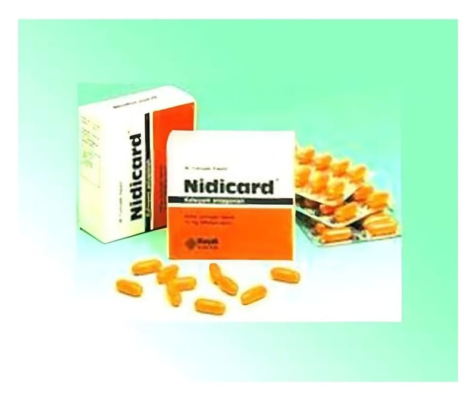

Nidicard 10 mg Kapsül, 30 Adet

Ne için kullanılır
KT · Bölüm 1NİDİCARD, etkin madde olarak 10 mg nifedipin içerir. NİDİCARD’ın etkin maddesi olan nifedipin, kalsiyum antagonistleri adı verilen bir ilaç grubuna dahildir.
NİDİCARD, 30 kapsüllük ambalajlarda bulunur. Yumuşak kapsüller, İçerisinde sarı yağlı, nane kokulu likid bulunan turuncu renkli, opak, oblong yumuşak kapsüllerdir. NİDİCARD, angina (göğüs ağrısı) veya el ve ayak parmaklarında renk değişimine (genellikle beyazlaşma) neden olan Raynaud fenomeni tedavisinde kullanılır.
Angina: NİDİCARD kalbi besleyen atardamarları rahatlatır ve genişletir. Bu kalbe daha fazla kan ve oksijen ulaşmasını sağlar. Eğer kalp daha az gerilirse, angina atakları daha şiddetli ve daha az sıklıkla olacaktır. NİDİCARD kapsül, yüksek tansiyonlu veya anginalı hastalarda ciddi kalp hastalıkları riskini arttırabilir. Bundan dolayı NİDİCARD kapsül eğer diğer tedaviler uygun değilse bu tip hastalarda kullanılabilir. Koroner Arter Hastalığı olan hastalarda tek başına kullanımdan kaçınılmalıdır.
Raynaud fenomeni: NİDİCARD kapsül, el ve ayak parmaklarındaki kan damarlarını rahatlatır ve genişletir. Bu iyi bir kan dolaşımı sağlamaya yardımcı olur.